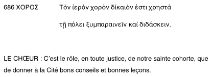

Littérature et paiedeia
C'est à Hésiode qu'il faut remonter pour ce qui est des origines de la réflexion sur la fonction éducative de la poésie (cf poème Les Travaux et les jours). D'autres ensuite : Xénophane, Héraclite, Démocrite.
Théorisation la plus profonde dans les Grenouilles d'Aristophane.
La comédie grecque archaïque
Aristophane le plus important.
Le problème de l'origine de la comédie reste ouvert, malgré les travaux d'Aristote sur le sujet. Dimension obscène dans la comédie attique. Concours comiques pendant les Lénéennes, fin janvier, alors que la navigation n'était pas ouverte : pas d'étrangers : thèmes strictement athéniens.
Aristophane
-445; -388. Il a gagné plusieurs concours de comédie dans sa vie. Dans Les Nuées, il présente Socrate comme un charlatan sophiste, qui enseigne l'art oratoire à la mode de Protagoras.
La Guerre du Péloponnèse
L'élément fantastique se mèle à la dimension politique dans les pièces d'Aristophane.
La guerre du Péloponnèse conclut cinquante ans pendant lesquels Athènes fut en tête de ligue de Délos (ligue de cités anti-perses), Sparte en tête de la ligue du Péloponnèse. Opposition de forces militaires entre Athènes (navale) et Sparte (terrestre), mais aussi politique (démocratie athénienne et oligarchie spartiate). Après la perte de la guerre par Athènes, gouvernement despotique et sanguinaie imposé : les Trente tyrans.
Les Grenouilles
Juste après la guerre du P pendant laquelle les meilleurs poètes athénienes (dont Sophocle par exemple) sont décédés.
Dionysos descend aux enfers et y trouve Euripide et Eschyle. Il s'agit de les départager en définissant le meilleur poète : celui qui donne les conseils les plus utiles à la cité. 
Eschyle
Auteur d'entre 73 et 90 pièces. Parmi elles : tragédie Les Perses (-472) : enseignement de modération devant le risque d'impérialisme.
Orestie également (retour d'Oreste qui venge son père en tuant sa mère Clytemnestre, et est tourmenté par les Erinyes).
Thèmes principaux de son théâtre : justice dans la famille et la cité, vengeance et responsabilité, rapport entre l'homme et les dieux.
Euripide
92 pièces dont 19 nous sont parvenues. Parmi elles un drame satyrique Le Cyclope.
Son théâtre aurait eu un succès posthume extraordinaire. Sa tragédie est complexe, et cherche à se rapprocher du réel. Le code héroïque est souvent renversé (ex Iphigénie, où tous les héros - Agamemnon, Ulysse... montrent leurs limites).
Euripide est l'intellectuel inquiet de l'Athènes des sophistes et de Socrate.
Le combat
Comment Aristophane oppose-t-il ces deux géants ?
 Selon Euripide, le poète sait rendre meilleurs ses concitoyens. Valeur démocratique de la poésie.
Selon Euripide, le poète sait rendre meilleurs ses concitoyens. Valeur démocratique de la poésie.Eschyle soutient avoir composé des pièces capables d'exalter la volonté de combattre et d'être vainqueur à la guerre.
Dans cette joute : théorisation de la fonction pédagogique de la poésie.
Il existait à l'époque une sorte de canon des poètes classiques : Orphée, Musée, Hésiode, Homère.
Orphée : plus mythologie qu'histoire, fils d'Apollon capable de faire bouger des pierres par son chant.
Musée : légendaire également.
Hésiode : historique, auteur de la Théogonie.
Homère : maitre d'éthique et expert en art militaire.
Après avoir présenté ces quatre grands, Eschyle accuse Euripide d'avoir mis en scène des évènements mythiques scandaleux, notamment des adultères. Le poète a le même rôle que les maîtres d'école. Accusation sur le plan éthique d'Eschyle envers Euripide.
Euripide revient sur une accusation de forme, Eschyle emploie parfois plusieurs fois le même mot dans les phrases de ses prologues. Euripide semble s'inspirer du travail des sophistes des distinctions synonymiques.
Mais Dionysos doit ramener un vainqueur, en cette période de péril, dans la cité, pour l'élever. C'est Eschyle qui gagne.
Les origines de la réflexion : poètes ou philosophes ?
Aristophane prétend présenter non son opinion personnelle sur la poésie, mais une opinion répandue. En fait, dès ses origines la poésie réfléchit sur sa nature et sa fonction.
Chez Homère, la poésie doit plutôt donner du plaisir, libérer les âmes de la souffrance, même si on trouve parfois une visée pédagogique (IXè livre de l'Iliade : Phénix, le vieux précepteur d'Achille, lui raconte l'histoire de Méléagre pour le détourner de sa colère).
La composante didactique de la poésie est théorisée à la fin du VIè par Xénophane et Héraclite.
Xénophane
Entre VIè et Vè siècle, fondateur de l'école éléatique. Sent l'exigence d'une divinité parfaite au niveau éthique (vs. Homère et Hésiode qui leur attribuent ce qui est blamable).
Donc conscient du rôle éducatif de la poésie d'Homère, et des conséquences mauvaises qu'elle a eues.
Héraclite
Né à Ephèse vers -540. Veut donner une explication du logos, et écrit un livre difficile qui défend les thèses : 1/ l'univers, qui s'identifie avec le feu, est éternel et dépourvu de commencement 2/ tout change sans cesse 3/ unité entre les opposés : vie/mort, jour/nuit...
Reconnait l'autorité des poètes pour pouvoir la renverser.
Deuxième partie du cours - Dans le Protagoras
Chronologie
Le Protagoras est l'un des dialogues les plus élaborés du point de vue littéraire. Daté plutôt à la fin des dialogues de jeunesse.
Datation dramatique
Datation dramatique autour de -431, qq mois avant le début de la guerre du Péloponnèse. Présence de Protagoras en 422. Anachronismes évidents du Protagoras : l'Athènes mise en scène par Platon n'est pas l'Athènes réelle.
Thème et structure du dialogue
Platon y présente de la façon la plus évidente l'opposition entre les sophistes et Socrate du point de vue des méthodes d'éducation, de recherche et de discussion.
Socrate théorise lui-même la possibilité de suivre des doctrines de Protagoras, quand elles sont jugées valables.
Schéma du Protagoras afin d'évaluer la fonction pédagogique de la poésie ressortant du dialogue.
Résumé de la structure du Protagoras, très clair.
La place de l'éducation est fondamentale pour l'existence de la cité. Les sophistes prétendent avoir une capacité pédagogique supérieure.
Les poètes comme sophistes cachés
Protagoras revendique la légitimité de sa profession, noble et ancienne, mais que les utilisateurs précédaient dissimulaient sous des masques divers. Ex Homère, Hésiode, ou d'autres sophistes se cachant derrière d'autres technai.
Comme Eschyle, Protagoras reconnaît la valeur pédagogique et civilisatrice de la poésie. Son activité de sophiste dans le sillon des poètes. Continuité entre poésie et sophistique.
Poésie et éducation institutionnelle
Trois étapes de l'éducation institutionnelle : la famille, l'école, et les lois.
Famille : distinction entre le juste et l'injuste : intégrer les conventions de la cité.
Ensuite, formation scolaire : c'est là qu'intervient la poésie. L'éducation littéraire a une visée morale. Cf Livre X de La République, où les seuls poètes acceptés dans la cité sont ceux qui offrent aux citoyens des modèles positifs, à partir de la critique de la poésie comme art d'imitation.
Même si Protagoras ne propose le bannissement d'aucune poésie, il met en exergue l'importance d'une production ayant une claire valeur pédagogique.
Rôle fondamental de la littérature dans le système pédagogique de la cité démocratique grecque.
Pour l'instant, Protagoras ne détaille pas qui sont les bons poètes ou la bonne littérature.
L'analyse du poème de Simonide
1/ capacité de comprendre quels textes poétiques sont correctement composés et lesquels ne le sont pas 2/savoir les analyser 3/ expliquer à qui le demande.
Socrate soutenait que le poème était bien composé, alors que pour Protagoras, le personnage principal (Simonide) se contredit, car il affirme qu'il est difficile d'être un homme de bien, puis critique Pittacos d'avoir dit ce que lui-même soutient, à savoir qu'il est difficile d'être excellent.
Socrate va devoir soutenir ses idées. Il triomphe dans l'exégèse littéraire par une analyse complexe, mais affirme que les discussions sur la poésie sont l'occasion d'interprétations de n'importe quelle façon. Il subordonne l'exégèse poétique à l'exercice de la dialectique.
Conclusions
Continuité entre le rôle d'éducateur et l'activité eds poètes.
Socrate dépasse l'exégèse sophistique de Protagoras, à travers une méthode qui vise la reconstruction du contexte historique et culturel des textes poétiques et la détermination de l'intention de l'auteur.